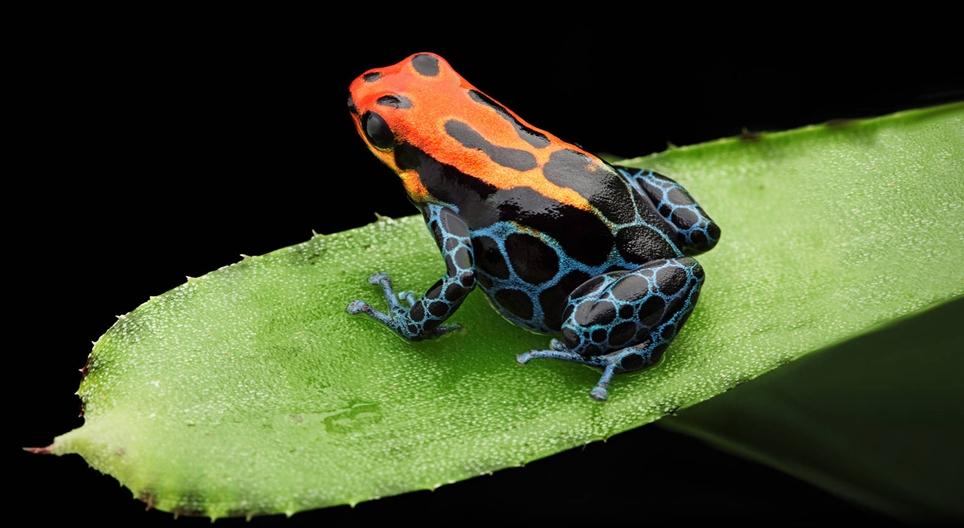

La rana punta de flecha, una de las ranas más identificables del mundo, es una especie de rana venenosa. producen hasta 200 microgramos de veneno, pero sólo son necesarios dos microgramos para matar a una persona. Se la conoce por su piel amarrila brillante en su espalda, azul en sus pierna y por su tamaño. Puede alcanzar hasta 5 centímetros de largo, lo que la convierte en una de las especies de ranas venenosas más grandes. Las ranas punta de flecha encuentran sus hogares bajo hojas en el denso follaje de los bosques tropicales, cuanto más húmedo, mejor. Las poblaciones de ranas punta de flecha que habitan en los bosques han evolucionado en aislamiento y no hay dos poblaciones que sean exactamente iguales. Son insectívoras, pero su alimentación también puede incluir otros artrópodos.
